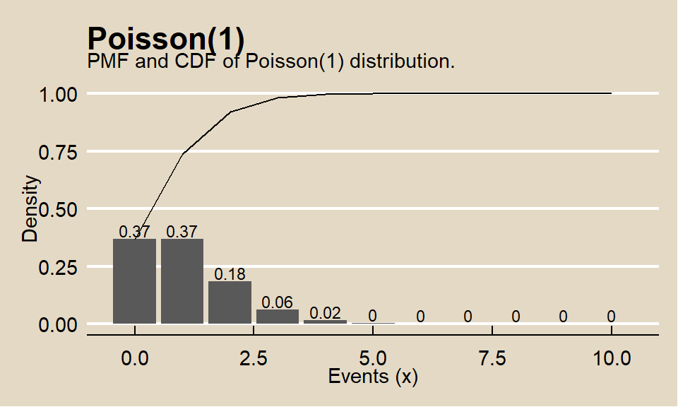

4.3 Example
In an experiment on the effectiveness of computer training, \(n_X = 125\) students were assigned to computer training and \(n_Y = 175\) were assigned to traditional training. \(x = 94 (75.2 \%)\) of the computer training students passed the certification exam and \(y = 113 (64.6 \%)\) of the tradition training students passed the certification exam, a difference of $ = .752 - .646 = .1063. At an \(\alpha = 0.05\) level of significance, does computer training produce higher success rates than traditional training? What is the \((1 - \alpha) = 95%\) confidence interval of the difference in success rates?
## [1] 0.752## [1] 0.6457143## [1] 0.1062857## [1] 0.1062857The samples are independently drawn because the experiment is random assignment. There are \(>= 5\) success, \(>= 5\) failures, \(>= 30\) observations, and \(.2 < p <.8\) probability of success for both \(X\) and \(Y\), so we can use the difference in proportions test.
The null hypothesis is \(H_0: d = d_0 = (\pi_x - \pi_y) = 0\) with alternative hypothesis \(H_a: d > 0\). This is a right-tail test. The test statistic is \(Z = \frac{d - d_0}{se_{d_0}}\) where \(se_{d_0} = \sqrt{p (1 - p) \frac{{1}}{{n_X}} + \frac{{1}}{{n_Y}}}\) with \(p = \frac{{x+y}}{{n_X + n_Y}} = \frac{94 + 113}{125 + 175} = 0.69\). \(se_{d_0} = \sqrt{.69 (1 - .69) \frac{{1}}{{125}} + \frac{{1}}{{175}}} = .0542\). \(Z = \frac{.1063 - 0}{.0542} = 1.96\). \(P(z > 1.96) = .0249\), so reject \(H_0\) at the \(\alpha = 0.05\) level of significance.
## [1] 0.69## [1] 0.05416166## [1] 1.962379## [1] 0.02485918R package stats function prop.test does this same calculation.
(prop.test.result <- prop.test(x = c(x, y),
n = c(n_x, n_y),
alternative = "greater",
conf.level = 1 - alpha,
correct = FALSE))##
## 2-sample test for equality of proportions without continuity
## correction
##
## data: c(x, y) out of c(n_x, n_y)
## X-squared = 3.8509, df = 1, p-value = 0.02486
## alternative hypothesis: greater
## 95 percent confidence interval:
## 0.01926052 1.00000000
## sample estimates:
## prop 1 prop 2
## 0.7520000 0.6457143Graph the hypothesis test with rejection range in red.
library(ggplot2)
library(dplyr) # for %>%
lrr = -Inf
urr = qnorm(p = alpha, mean = d_0, sd = se_d0, lower.tail = FALSE)
data.frame(d = -300:300 / 1000) %>%
mutate(density = dnorm(x = d, mean = d_0, sd = se_d0)) %>%
mutate(rr = ifelse(d < lrr | d > urr, density, 0)) %>%
ggplot() +
geom_line(aes(x = d, y = density)) +
geom_area(aes(x = d, y = rr, fill = "red"), alpha = 0.3) +
geom_vline(aes(xintercept = d_hat), color = "blue") +
geom_vline(aes(xintercept = d_0), color = "black") +
labs(title = bquote("Hypothesis Test of Difference in Proportions"),
subtitle = bquote('p_X ='~.(round(p_x,3))~'p_Y ='~.(round(p_y,3))),
x = "d",
y = "Density") +
theme(legend.position="none") 
Define a \((1 - \alpha)\%\) confidence interval as \(\hat{d} \pm z_{\alpha {/} 2} se\) where \(z_{\alpha {/} 2} se = \epsilon\) is the margin of error. \(se = \sqrt{\frac{p_X (1 - p_X)}{n_X} + \frac{p_Y (1 - p_Y)}{n_Y}} = \sqrt{\frac{.752 (1 - .752)}{125} + \frac{.646 (1 - .646)}{175}} = .0529\) and \(z_{\alpha {/} 2} = 1.96\).
## [1] 0.05290756## [1] 1.959964lcl <- d_hat - z_crit * se
ucl <- d_hat + z_crit * se
cat("95% CI: ", round(d_hat, 4), "+/-", round(se * z_crit, 4), "= (", round(lcl, 4), ", ", round(ucl, 4), ")")## 95% CI: 0.1063 +/- 0.1037 = ( 0.0026 , 0.21 )R function prop.test can calculate a confidence interval around a proportion. In this case, use a two-tail distribution.
(prop.test.result <- prop.test(x = c(x, y),
n = c(n_x, n_y),
conf.level = 1 - alpha,
correct = FALSE))##
## 2-sample test for equality of proportions without continuity
## correction
##
## data: c(x, y) out of c(n_x, n_y)
## X-squared = 3.8509, df = 1, p-value = 0.04972
## alternative hypothesis: two.sided
## 95 percent confidence interval:
## 0.002588801 0.209982628
## sample estimates:
## prop 1 prop 2
## 0.7520000 0.6457143Graph the 95% CI.
lcl <- round(prop.test.result$conf.int[1], 3)
ucl <- round(prop.test.result$conf.int[2], 3)
data.frame(d = -300:300 / 1000) %>%
mutate(density = dnorm(x = d, mean = d_hat, sd = se)) %>%
mutate(rr = ifelse(d < lcl | d > ucl, density, 0)) %>%
ggplot() +
geom_line(aes(x = d, y = density)) +
geom_area(aes(x = d, y = rr), fill = "red", alpha = 0.3) +
geom_vline(aes(xintercept = d_hat), color = "blue") +
labs(title = bquote("Difference in Proportions Confidence Interval"),
subtitle = bquote('p_X ='~.(round(p_x,3))~'p_Y ='~.(round(p_y,3))),
x = "d",
y = "Density") +
theme(legend.position="none")